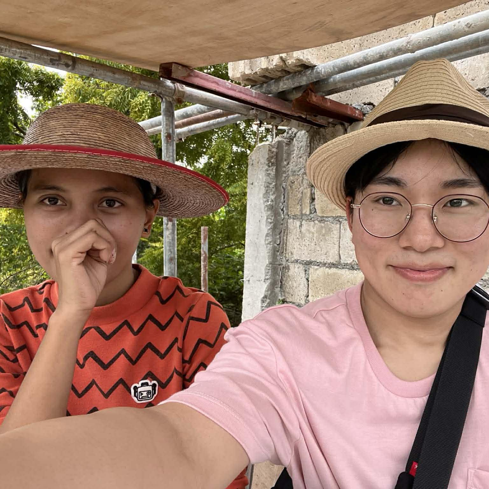
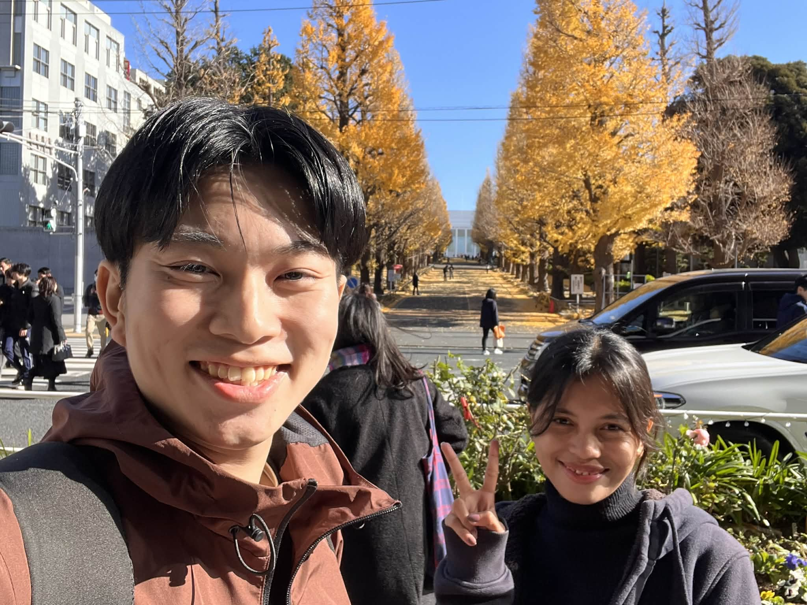
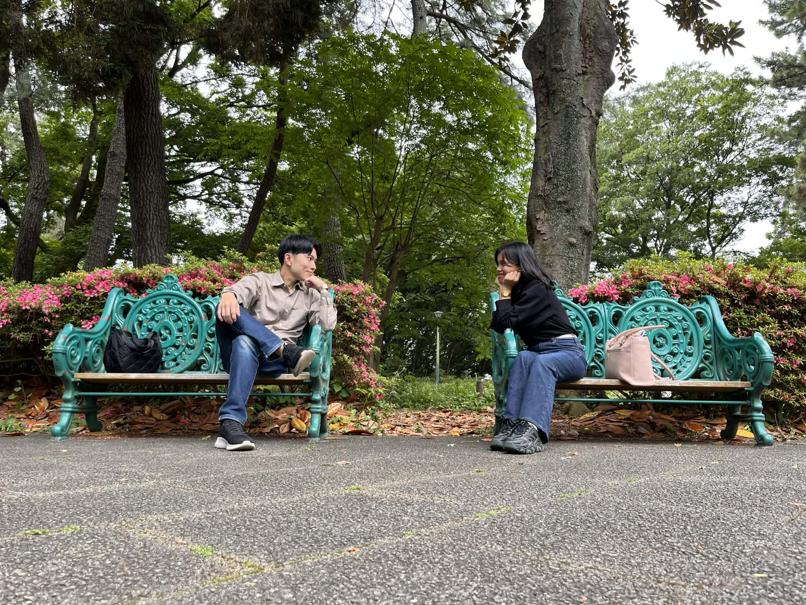
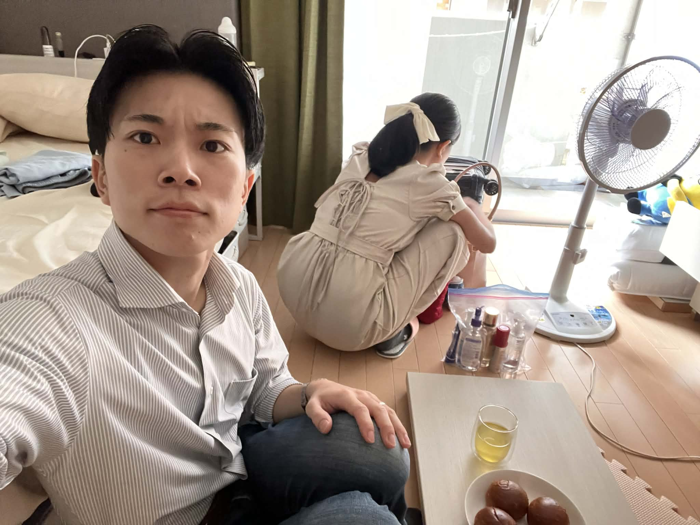

From Nish, with love
A birthday gift, just for you
26 years of being wonderful
💨 Blow the candle!
✦ A Word for You ✦
"For I know the thoughts that I think toward you," saith the Lord, "thoughts of peace, and not of evil, to give you an expected end."Jeremiah 29:11
moments that matter

Chapter 01
The Beginning
We both looked so perfectly awkward. Yet, we already know that this was the beginning of a lifetime together.

Chapter 02
A Day to Remember
I still vividly remember that surreal feeling of having you here in Hiyoshi. It was the beautiful prelude to all the exciting days we were about to share in Japan.

Chapter 03
The Day We Became a Family
Just like the plums of Okurayama Park, our first day as a family was beautifully sweet and sour—a memory we will cherish forever.

Chapter 04
Keep Looking Forward
Saying goodbye to you that morning felt like losing a piece of my heart—a quiet yet overwhelming pain. But I hold onto the joy that very soon, when we see each other again, 'goodbye' will be a word we never have to say ever again.
✦ A Letter from Nish ✦
My dearest Rachel,
Happy 26th birthday, Rachel. I was finally expecting to celebrate your birthday together this year, but it seems God is giving us one last test. It has been 3 years and 7 months since our journey started. We have navigated through what others might call "hardships," but every time we faced a challenge, we overcame it together. Whenever I felt pessimistic, your innate optimism always lifted me up and carried me through. My life has been so much more exciting because of you. Thank you for being the light that guides me through the dark. This birthday is just one more chapter before we finally close the distance for good. I can't wait to start our "forever" soon honeyy❤️
Your honey,
Nish 🌹
With love & prayer
April 11, 2026
May God bless every day of your 26th year.
🌹